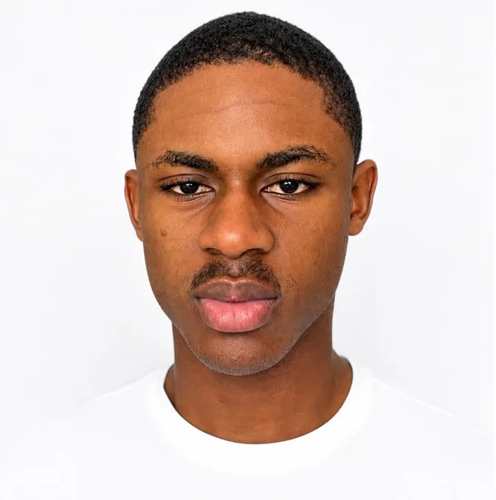

Qui je suis
À propos
Étudiant en informatique à Pigier Côte d'Ivoire, je construis des sites et des applications web pour devenir développeur Full-Stack.

Je m'appelle N'Goran Junior et je vis à Abidjan, à Yopougon. J'ai suivi ma formation en développement d'applications à Pigier Côte d'Ivoire et obtenu le BTS Informatique Développeur d'Applications.
J'apprends en construisant. Chaque projet de ce portfolio m'a fait pratiquer une nouvelle partie du métier : du site statique en HTML, CSS et JavaScript jusqu'aux plateformes Laravel avec base de données. Depuis août 2026, je suis en stage de développement web chez YA Consulting, à Abidjan.
Mon objectif est de devenir développeur web Full-Stack. Je suis ouvert aux stages, aux collaborations et aux petits projets de création de site.
- Localisation
- Abidjan, Côte d'Ivoire
- Études
- BTS Informatique Développeur d'Applications · Pigier Côte d'Ivoire
- Objectif
- Développeur web Full-Stack
- Langues
- Français · Anglais technique